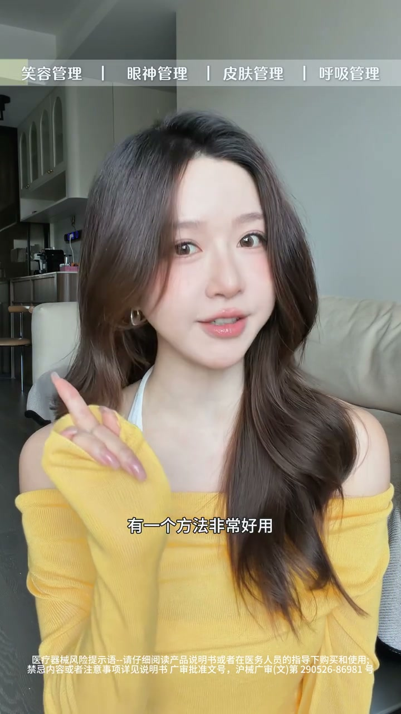
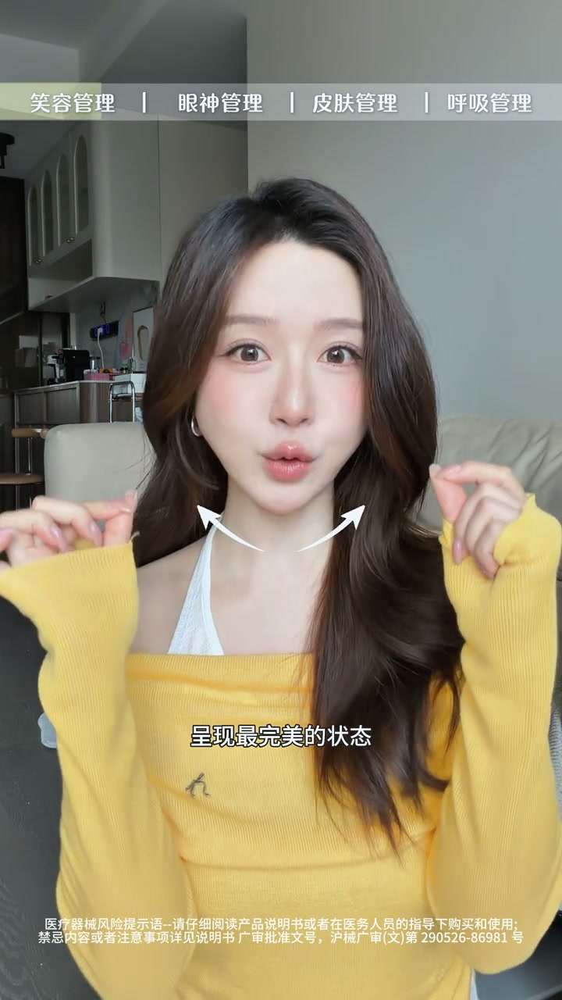
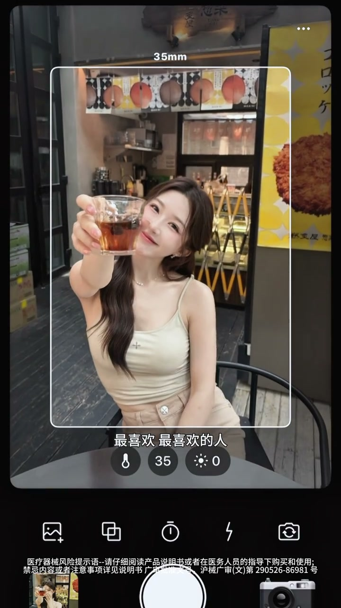

表情僵硬？上镜管理是系统工程
00:00有的女生私下很生动很漂亮，可是一拍照就表情僵硬、眼神乱飘，怎么拍都不出片。
00:12像咬筷子练微笑、刻意嘴角上扬这些方法，已经过时又累又没有用。
00:20真正有用的上镜管理其实是一套系统工程——从表情、眼神到皮肤状态，甚至是呼吸，任何一个环节掉链子，都会影响上镜的生动感。

微笑大法：说 money 不说茄子
00:37拍照最常用的微笑：放弃说“茄子”，有一个方法非常好用——学会说一个英文单词 money。
00:44一说 money，舌头自然会抵住上颚——这个动作不仅让微笑弧度呈现最完美状态，还会拉长下颌线、让双下巴消失，比刻意咧嘴微笑生动太多了。

眼神大法：焦点虚化
00:59第二个最难也最关键的是眼神，所有艺人的必修课，专业点叫焦点虚化。男友视角、女友视角都要先经过这种训练。
01:11错误示范：直勾勾地盯着镜头——眼神很僵硬，而且看起来很凶，像是在瞪着对面的人。
01:16自拍的话，就看向发际线的位置，这样的眼神拍出来最柔和而且很有神。
01:21别人拍的时候，眼神看向镜头偏下一到两厘米的地方，然后想象后面站着最喜欢最喜欢的人——眼神就会有延伸、有对话感。脑子里一有想象画面，拍出来的眼神就完全不一样。

呼吸大法：呼气做表情，吸气定住
02:42最后一个表情管理大法就是呼吸法。idol 的表情管理从不崩，秘诀就在于做表情的时候呼吸是有节奏的。
02:53呼气时做表情，吸气的时候将表情定住。
02:57比如最常拍的回眸一笑：转身看镜头的时候，先呼气微笑，然后顶住呼吸，把 pose 维持在那里——表情就会又灵又自然；而且吸气的时候整个人状态是提着的，拍出来的形态也更好看。
真正的上镜美不是硬凹出来的，而是了解五官和情绪之间的联动——四步系统：money 微笑、焦点虚化眼神、皮肤紧致、呼吸定住，才能轻松掌控镜头。